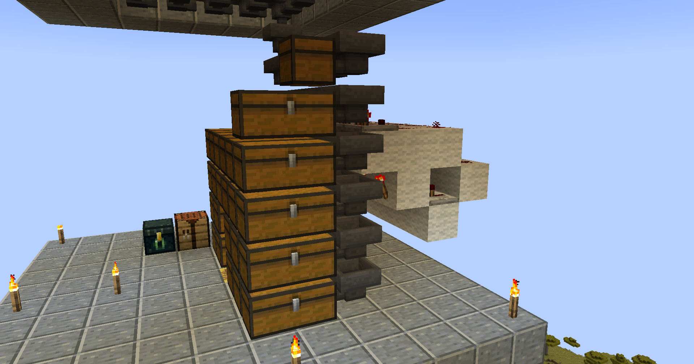

¿Cómo funciona?
Básicamente, para hacer que la granja funcione solamente hay que quedarse AFK en la capa más alta del mundo, con el fin de que solo aparezcan mobs en la granja.

Resultados
Esta granja genera alrededor de 10.000 objetos por hora.
¿Cómo construir?
Si quieres construir esta granja de mobs, puedes hacerlo siguiendo el tutorial de Exuar 17.